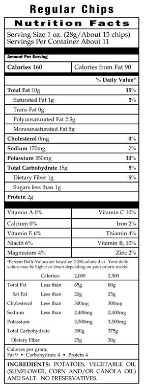

如何阅读食品标签
在美国出售的大部分食物均有食品标签。食品标签上的信息可以帮助您决定要不要食用这种食物。
营养成分表
食品标签上的“营养成分表”提供了营养方面的信息。例如，它会列出食物中含多少钠。见图1。学习如何阅读食品标签，并了解哪些食物含钠量更高，可以帮助您控制钠的摄入量。请查看食品标签中的下列信息：
配料表
食品包装上的配料表会告诉您该食品中每种成分的含量。配料表中的成分按含量多少从高到低排列。
每份量
对于营养成分表上的其余信息，每份量是关键。
营养信息都是基于1份食物。如果您吃了2份食物，您就摄入了2倍的热量和2倍的营养素。
在您熟悉每份量之前，可对每份食物进行称量。使用标准的量杯和量匙。把食物烹制好后再称量，而不是在烹制
营养成分限制
如果您被告知要限制摄入脂肪、胆固醇或钠，要保证每份食物中这些物质的含量不超过下列标准：
3 g总脂肪
200 mg钠
20 mg胆固醇

上一节下一节
 扫描二维码在手机上阅读此文章
扫描二维码在手机上阅读此文章